收藏方式分散
得到支持
39 / 52 使用两种及以上保存方式。
PROJECT CASE STUDY · 湖北美术学院 · 联合设计训练营
让收藏过的灵感，不再难以找回。
给设计师的 AI 视觉素材收藏与检索工具。从一次找不到收藏的经历，走到可以体验的课程原型。
两位组员先各写各的：13 条 + 12 条，共 25 个真实生活 Bug。
3 个候选问题来自 PPT 中标黄的 3 条记录：找素材风格比例总对不上 / 设计文件版本太多 / 收集的参考图找不到。最终聚焦其中的收藏找回问题。
这种晚上，我们都经历过。


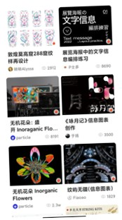
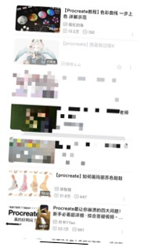
算了，重新搜吧。
把初步发现的痛点压缩成四个关键词。
这只是我们自己的困扰，还是更多创作者共同面对的问题？
先交代调研对象和方式，再看我们从中发现了什么。
调研方式：线上问卷 + 线上补充访谈。问卷通过朋友圈、QQ 动态、群聊和小红书传播；另设 6 个深入调研名额，用于继续追问收藏、找回与整理习惯。
同一组调研中，收藏、找回与再次使用三件事同时出现。
39 / 52使用两种及以上保存方式
保存方式 · 多选题 · n = 52
“特别喜欢的会保存图片放在相册的文件夹里”
访谈原话 · 节选7 人数据来自现有问卷整理补充；发现一 PPT 展示前三项。
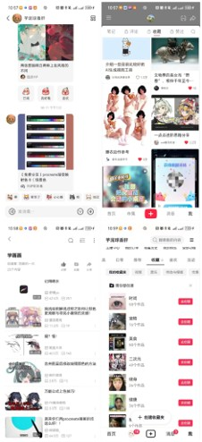
46人作答找回困难题 · 多选
不是“有没有收藏”，而是收藏之后能不能找回来。
“记忆里有这张参考，但没通过右上角文字搜索搜到，因为只有文件名信息”
访谈原话 · 节选前四项来自发现二 PPT；链接失效 11 人来自现有问卷整理补充。
49 / 52表示经常或偶尔会再次使用
复用频率 · 单选题 · n = 52
“前两三天找参考花太多时间了”
访谈原话 · 节选“希望保存的时候本地可以弹小窗选相册分类”
访谈原话 · 节选改进期待 · 多选题 · n = 52。此处只呈现用户期待，不直接等同已确定功能。
把开题时的三个判断，放回问卷与访谈中核对。
得到支持
39 / 52 使用两种及以上保存方式。
得到支持
30 人觉得收藏太多，24 人想不起关键词，22 人只记得画面。
被推翻
49 / 52 表示经常或偶尔会再次使用。
来源 · 开题判断 PPT；完整表述与证据以原始 PPT 为准。
CHAPTER SUMMARY · 章节总结
许多受访创作者都面临素材收藏分散、找回困难的问题，而他们仍然有再次使用素材的需求。
那么，造成这些困难的原因是什么？团队将访谈整理成 7 组同理心卡片，并用 35 条便签归纳出五个议题，覆盖灵感获取、保存方式、分类习惯、找回困难与素材使用。
文件名或文字标签无法覆盖用户记得的视觉特征。
跨平台保存让同一项目的素材散落各处，回看要反复切换。
找到参考以后，还需判断使用场景与来源。
AFFINITY MAP · 访谈证据
五个主题均来自现有亲和图；左侧是五类研究图快捷方式，右侧说明这张图让我们看到了什么。
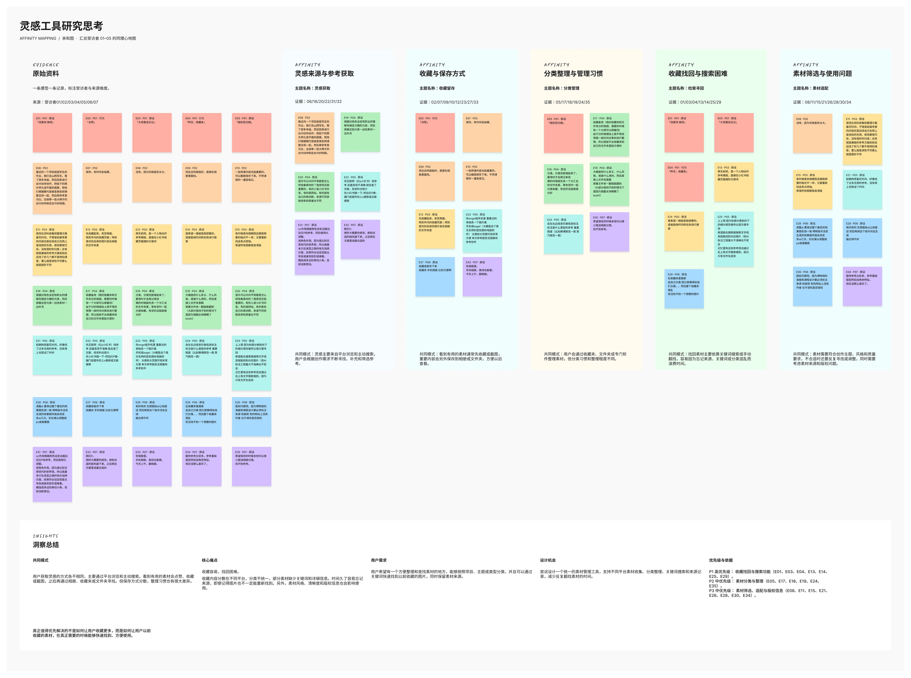
"灵感主要来自平台浏览和主动搜索，用户会根据创作需求不断寻找、补充和筛选参考。"
行为说明：用户不是先想好分类，而是在浏览与搜索中不断发现参考。
研究收获：产品要先接住“看到就想存”的动作，再解决存完以后的问题。
"现在这样就挺好，直接在相册里面找。"
行为说明：相册和文件夹仍是多数用户熟悉的保存位置。
研究收获：导入要顺着现有习惯，而不是要求用户先重建一套分类。
"希望保存的时候本地可以弹小窗选相册分类"
行为说明：用户会整理，但希望在保存当下用很轻的动作完成。
研究收获：分类适合放进保存流程，项目页再保留自动与手动两类。
"记忆里有这张参考但没通过右上角文字搜索搜到，因为只有文件名信息"
行为说明：找回时依靠的不是文件名，而是画面、颜色和场景。
研究收获：把按画面或颜色描述找回放到产品主路径。
"没有，因为风格差异太大。"
行为说明：找得到之后，用户还要判断能否用于当前创作与来源是否合适。
研究收获：素材详情保留场景、风格与来源判断，项目与画板承接后续使用。
早期把整理与跨平台保存视作主要矛盾。
35 条便签归入五个议题；访谈原话指向文件名搜索无法覆盖视觉记忆。
把优先级从"存得下"移到"找得到"。
手绘稿与后续方案都围绕同一条收、找、用工作流。
调研后，团队先比较了三条可能方向：继续依赖相册与平台收藏、做跨平台集中管理、用画面记忆重新找回。现有证据显示，单一整理并不能解决“只记得画面”的困难。
访谈中有人认为“直接在相册里面找”已经够用，但跨平台与记不起关键词的情况仍会卡住。
24 人期待跨平台收藏，37 人希望自动整理；方向成立，但只“存得更整齐”还不够。
33 人希望按图或描述找回，22 人只记得大致画面；这条方向直接回应核心困难。
用户不是先想好分类，而是在浏览与搜索中不断发现参考。
期待改进为多选 n=52；另有 24 人希望跨平台收藏。
不以展示 AI 为目标堆功能，优先把找回放进可用路径。
下一章说明名称与定位，再用真实手绘和功能表承接这一判断。
来源 · 前期调研问卷与访谈原话；开题便签与三次问题定义。方案方向为基于现有证据的整理表达，不新增虚构调研数据。
TADA! 呼应重新找到灵感时的惊喜，「图然想起」把「图」嵌进「突然想起」。这是基于成品名称的字面释义，命名筛选记录待补。
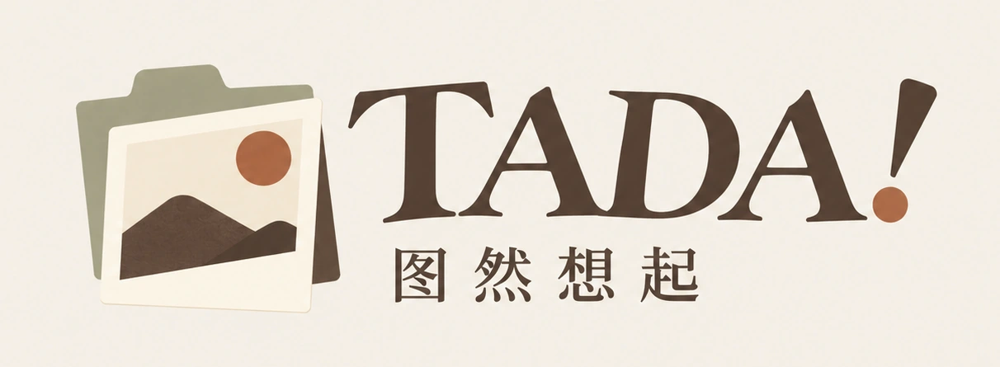
早期尝试取景框、照片叠层与抽象图形。定稿将文件夹与斜叠风景照合在一起，并让橙色日轮呼应感叹号。
产品设计系统 · 中文 Noto Serif SC，拉丁文字 Newsreader。
在成为产品界面之前，两位组员先围绕手机随手收、按记忆找、创作时查看讨论功能。大屏与网页设想只作为过程参考，当前产品重点放在手机端。
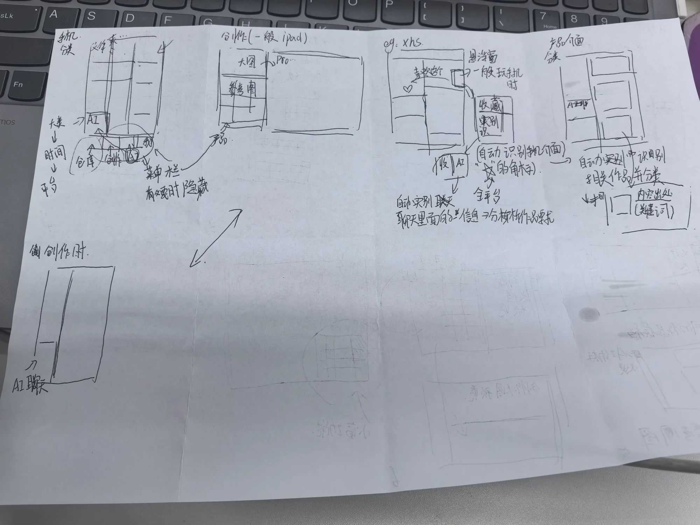
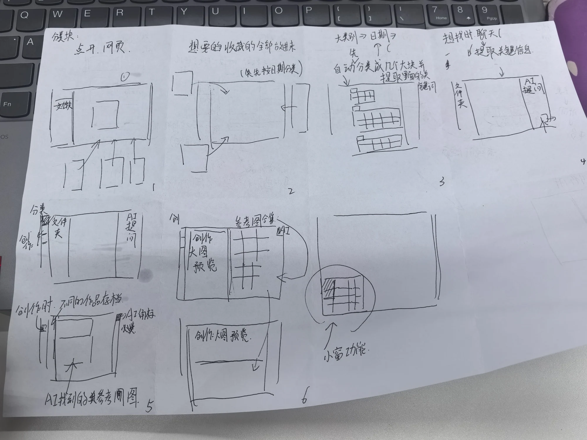
把导入入口放在窄屏容易触达的位置。
从“边创作边看”的草图过渡到网页参考画板。
网页与大屏草图只说明想法来源，主线回到手机上的真实使用。
此处展示手绘原件，不伪造高保真过程稿。
来源 · 开题目录两张手绘原稿；展示件保留原始内容，仅做脱敏与阅读方向处理。
功能定义直接承接前面的问题：先把素材收进来，再用模糊记忆找回去，最后放进项目和参考画板继续使用。
相册、链接、截屏与图图原贴导入；AI 识别与关键词提取辅助自动整理。
自然语言搜索、按颜色与场景描述筛选，让“只记得画面”也能开始检索。
素材详情、项目归档与参考画板，把找到的图放回具体创作任务。
相册、链接、截屏、图图原贴导入均有原始录像。
手绘中有构想，当前真机系统分享证据待补。
20 条查询验收记录显示能提交并反馈命中、漏召回与误报。
9 条结果存在偏差，已作为迭代依据，不写成完全解决。
加入项目、项目页与详情操作有界面和录像证据。
草图与界面结构存在，完整真实截图仍待补。
这一章只围绕手机端展开：用户如何在手机上导入素材、按画面找回，并把结果放进项目继续使用。网页端资料只作为辅助证据，不再作为主线介绍。
PRODUCT FLOW · 收 / 找 / 用
待补：整张总流程图
此处只等待补入贯穿「收 / 找 / 用」的整张总流程图；现有局部流程图都在下方三个标签中。
USE THE PRODUCT · 收 / 找 / 用
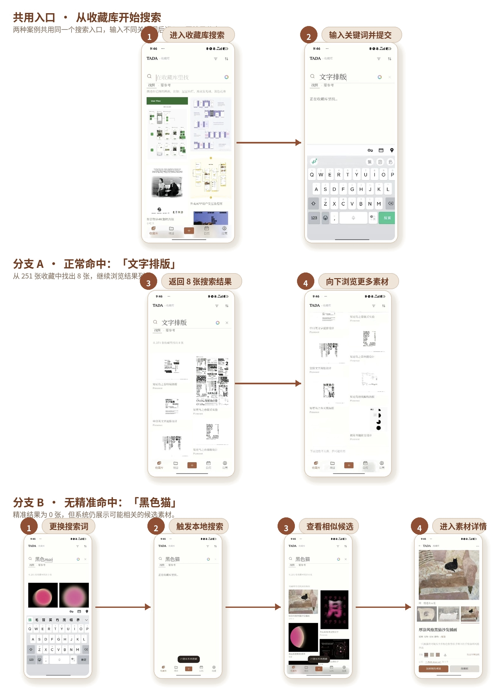
现有证据 · 找流程图原图；20 条搜索验收记录中 160/160 张建索引，9 条存在漏召回、排序偏差或误报。
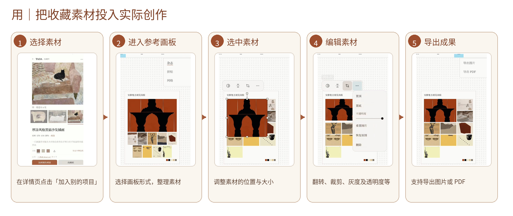

现有证据 · 用流程简图与详图原图；图片详情与项目浏览、排序截图在界面留档中。
接手仓库的前端使用 React 与 Vite，后端使用 FastAPI。导入后的图片进入素材库，可由本地 Chinese-CLIP 支持图文检索。配置千问后，产品能生成图片描述与标签。
公开演示版使用共享素材库，提供网页导入、搜索与项目入口。本机版接入小红书及花瓣收藏，小红书自动同步有项目记录。手机可见网页、快捷指令和微信导入入口，真机验收见测试章节。
来源 · TADA-board README、前后端源码、TADA-fetch 参考画板及线上页面。
制作产品时，团队用 20 条查询检查本地检索，并用电脑验收记录核对导入、详情与项目流程；下方小板块展示已落实到界面的五组前后对比。
1 张 · 符合，有浪和人影的海边图。
4 张 · 基本符合，返回多色图像。
0 张 · 漏召回，验收库已有云层相关素材。
口径 · 用户意见来自用户测试反馈文档与改版 PPT；老师建议、团队自测 / AI 走查单独标注，不并入用户测试人数。
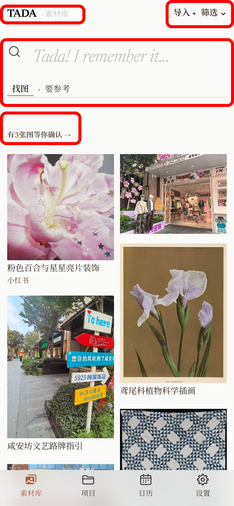
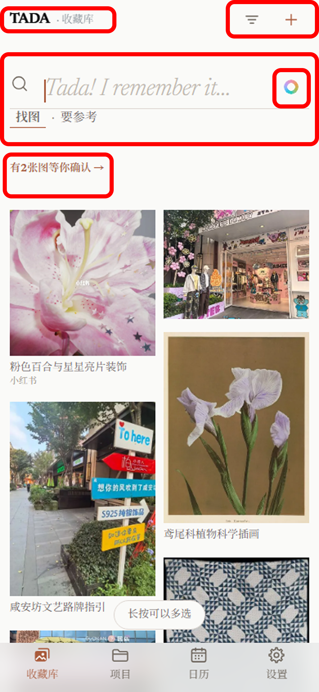
来源 · 改前改后 / 01-首页搜索成主角文字分层 / 说明.txt；用户测试反馈文档；3.0 改版 PPT。
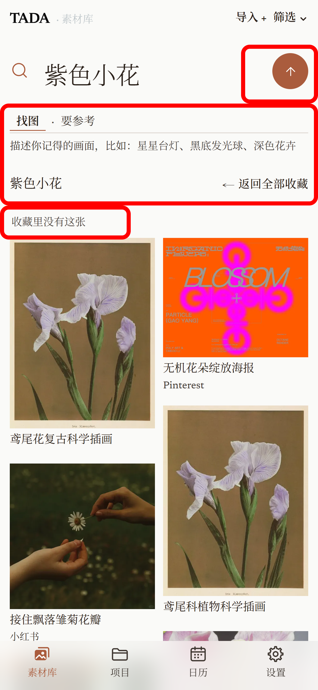
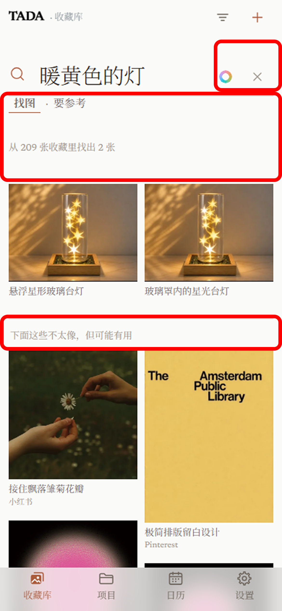
来源 · 改前改后 / 03-搜索结果 / 说明.txt；3.0 改版 PPT 用户原话页。
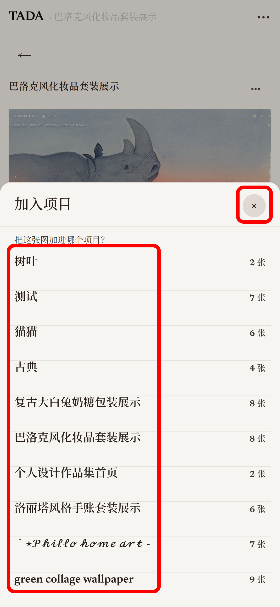
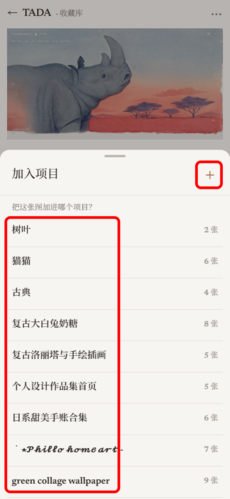
来源 · 改前改后 / 06-加入项目 / 说明.txt；用户测试反馈文档 / 界面优化。
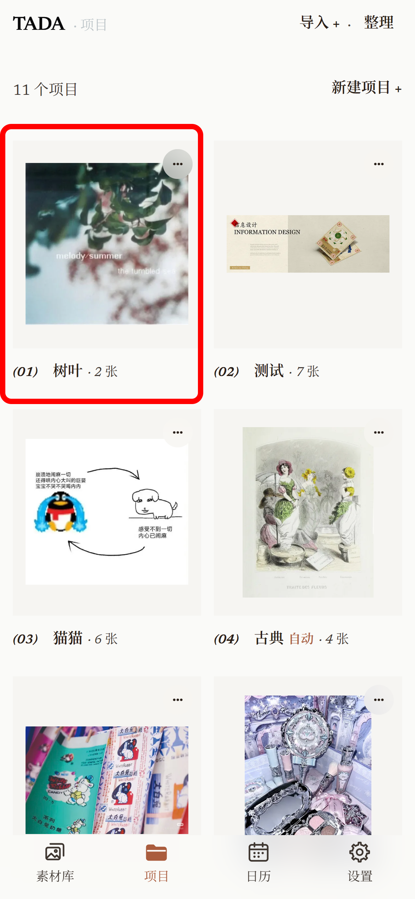
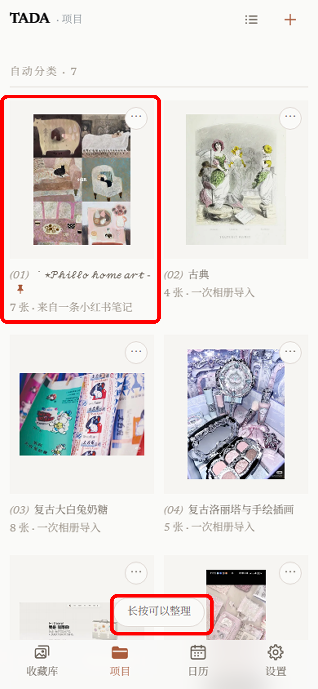
来源 · 改前改后 / 07-项目页自动分类手动分类 / 说明.txt；用户测试反馈文档；3.0 改版 PPT 项目页。
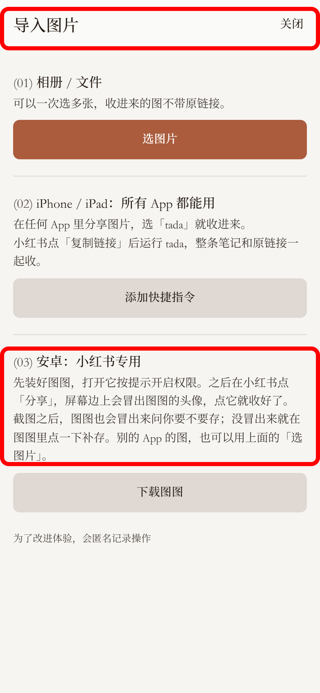
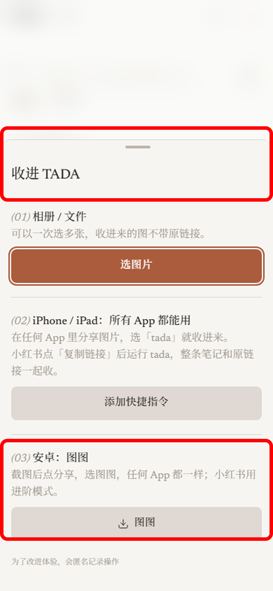
来源 · 改前改后 / 11-导入 / 说明.txt；用户测试反馈文档。
来源 · 《电脑验收记录》《搜索逐句结果》及两份逐句 JSON。
以下为最后测试修改后的真实产品界面，放在测试迭代之后作为最终效果展示；网页端资料仅作补充，不再作为产品设计主线。
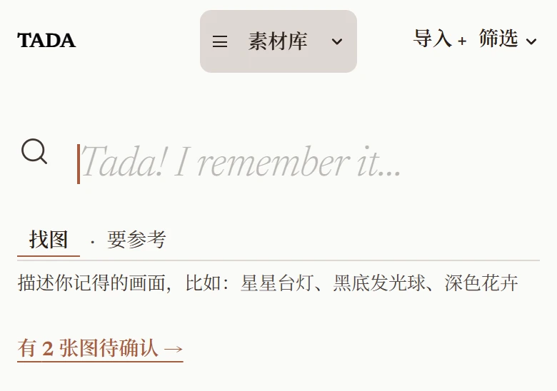
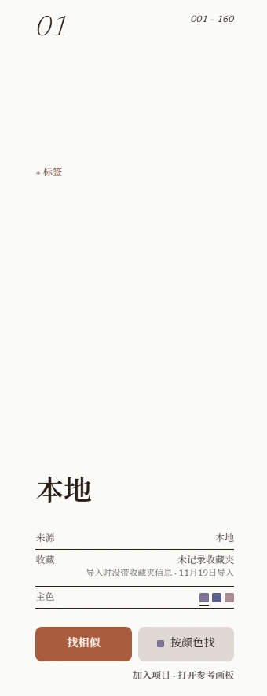
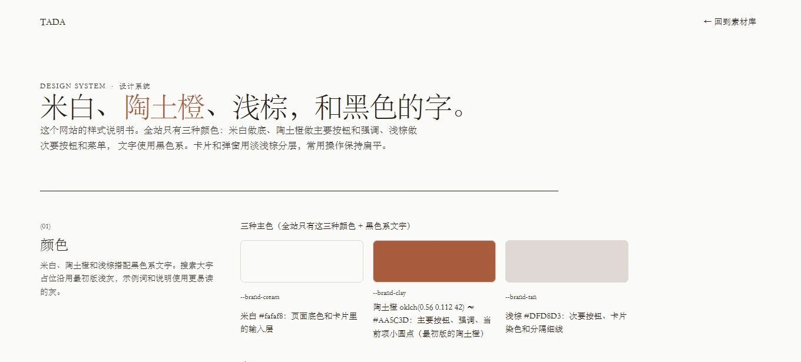
最终成果不只靠静态截图说明。下面保留原始全流程录像，并用三段核心操作片段展示产品如何从导入走到找回与使用。
三段片段分别对应收、找、用；均为原始录像，按视频自身比例播放。
来源 · 06 最终成品展示目录中的原始全流程录像与三段使用流程录像。
从《我明明收藏过》到 TADA!，课程原型把散落的参考图放回同一个使用流程。用户可以随手收图、按记忆描述找图，再放进项目或参考画板。
复用数据改变了开题假设，促使团队从「整理收藏」走向「按视觉记忆找回」。可运行原型也让原先只在草图里的交互变成可逐条验证的问题。
继续验证视觉描述的排序与无匹配判断。补充真机导入和通知的测试，并归档 Figma 原稿及完整授权的演示画面。
FINAL PRODUCT EXPERIENCE · 最终产品体验